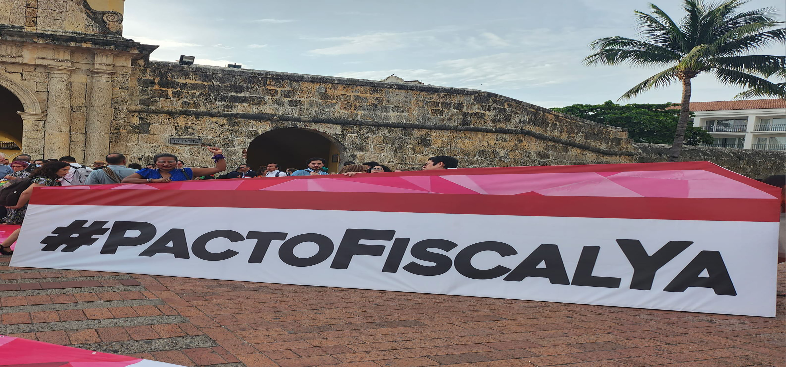

Promover los derechos sexuales y derechos reproductivos y los derechos de la comunidad LBTI.
Leer masContribuirá a fortalecer capacidades técnicas, operativas políticas de organizaciones y redes de actores, principalmente de mujeres y jóvenes, a niveles locales y territoriales para que puedan impulsar estrategias adaptadas a sus contextos para prevenir y atender la violencia contra las mujeres y las niñas.
Leer masApoyo a defensores y defensoras de derechos humanos en situación de riesgo.
Leer masDirigido a mujeres privadas de libertad, con un enfoque integral hacia un mundo libre tortura y los malos tratos, crueles e innecesarios de manera holística a través de las acciones de prohibición, prevención y rendición de cuentas y restitución de derechos.
Leer masDirigido a mujeres urbanas de ocho barrios y colonias del Distrito Central, expuestas al riesgo de violencia e inseguridad se han fortalecido organizativamente y se han articulado a nivel comunitario, a nivel local y nacional para la prevención de violencia y la protección de sus derechos contribuyendo a la eliminación de la violencia contra las mujeres y niñas.
Leer masContribuir a fortalecer el movimiento feminista y LTBIQ en la zona del proyecto, a través del posicionamiento de sus demandas y el protagonismo de sus acciones para prevenir y atender la violencia lesbofobia y bifobia contra niñas y mujeres campesinas, indígenas, lesbianas y bisexuales.
Leer masContribuir al mejoramiento de la situación de las Trabajadoras Domésticas Remuneradas en Honduras, a través de la formación, incidencia, comunicación y empoderamiento/autonomía económica.
Leer mas
Prevención y atención de la violencia contra las mujeres.
Leer mas
Contribuir al mejoramiento de las condiciones de vida de las mujeres influyendo en la legislación, normas presupuestarias y el incremento de recursos dirigido hacia el acceso a la justicia y el empoderamiento económico de las mujeres.
Leer masFortalecimiento de las capacidades en prevención y atención de la violencia hacia las mujeres de las mujeres rurales y urbanas organizadas.
Leer masPromover los derechos sexuales y derechos reproductivos de las mujeres jóvenes.
Leer masReducir los índices de violencia contra las mujeres, niñas y defensoras de la tierra y territorio, en los ámbitos estatales, públicos y privados.
Leer masApoyo a defensores y defensoras de derechos humanos en situación de riesgo.
Leer masFortalecer las Voces para la Defensa de sus Derechos en las Mujeres Jóvenes Vinculadas al CEM-H y sus Articulaciones para Impulsar su Agenda de Incidencia.”.
Leer masContribuir al fortalecimiento de la participación, incidencia política y organización de las trabajadoras domésticas, para exigir condiciones laborales que garanticen la dignificación del trabajo doméstico remunerado en Honduras.
Leer masApoyo a defensores y defensoras de derechos humanos en situación de riesgo
Leer mas